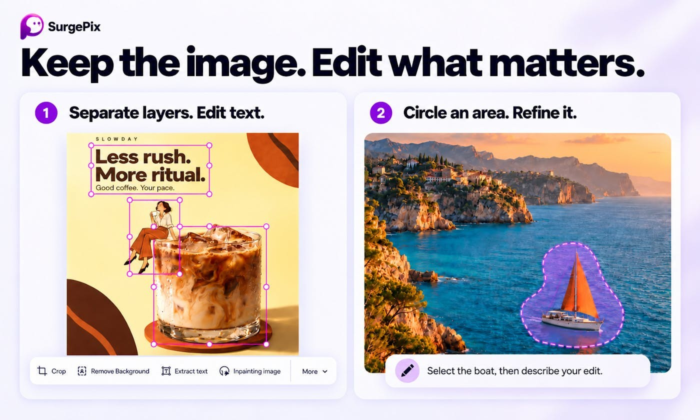

迟来的标题修改不该重做版面
一张海报已经通过方向确认，只差把日期改到下周，这时再生成整张图通常会引入新的检查工作。字距、背景人物和商品细节都可能跟着变化。SurgePix的公开介绍把改字、区域重绘和图层处理放在同一条操作链里。这样的入口更接近小团队真实的修订：没有人要求重新发明整套设计，只是要把某个错误改掉。使用者仍需要知道当前选中了什么、修改会影响哪一层，以及怎样回到上一版本。若系统把文字当作图案处理，肉眼看似相近的结果也可能已经变成错误信息。
SurgePix · 产品 · PH发现

一张海报已经通过方向确认，只差把日期改到下周，这时再生成整张图通常会引入新的检查工作。字距、背景人物和商品细节都可能跟着变化。SurgePix的公开介绍把改字、区域重绘和图层处理放在同一条操作链里。这样的入口更接近小团队真实的修订：没有人要求重新发明整套设计，只是要把某个错误改掉。使用者仍需要知道当前选中了什么、修改会影响哪一层，以及怎样回到上一版本。若系统把文字当作图案处理，肉眼看似相近的结果也可能已经变成错误信息。
作者展示的方向包括将平面图拆成可编辑层，以及抽出文字再输入。它们解决的不是同一个难题：找出文字区域、恢复被遮挡背景、确定阴影属于哪个对象，都可能影响后续修改。用户看到多个图层之后，容易以为它们等同原设计文件里的对象，其实公开资料没有证明这种一一对应。对有明确品牌要求的素材，最好先检查一个小改动是否触碰其他部分。比如只改价格，商品轮廓不应改变；替换一句文案，原来的人物也不该多出细节。这样的局部边界，决定一张生成图能不能继续被当作工作文件使用。
品牌素材复用可以减少反复提供同一套颜色、标志和参考图的步骤，但“保持品牌一致”不只是一种色调。不同场合还会涉及标志留白、字形、数字、产品比例和不能改动的文字。把这些要求放进素材包，并不意味着每次输出都会自动满足。对电商小团队，最容易被忽略的可能不是画面够不够漂亮，而是包装上的容量和商品型号有没有变化。设计者也应保留原始资产，避免把一次错误的生成结果当作下一轮唯一参考。现有问答表达了用户希望局部修改不破坏布局，尚未给出系统性验证结果。
宣传中的代理调用让制作入口不局限于画布，但接到编程助手不代表设计工作已经自动完成。一个最终要交给同事修改的文件，仍需要确认格式、文字能否编辑、字体是否存在，以及重新打开后是否保留预期结构。单纯导出一张图片能满足发布，却未必满足后续维护。当前价格、输出格式和技能许可证仍未核实，所以适用范围只能停留在已公开的编辑机制。对读者最值得尝试的是一张已有明确修订要求的旧素材：它能说明操作链是否顺手，也不会把无目标的大量出图误当作产能提高。